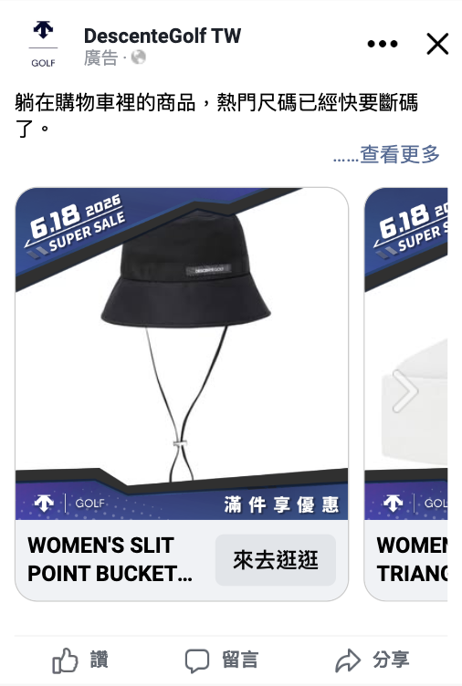
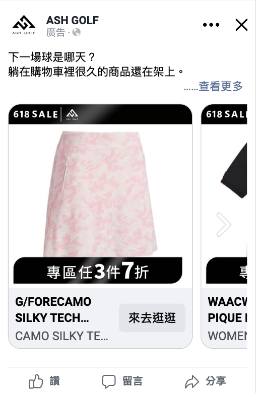
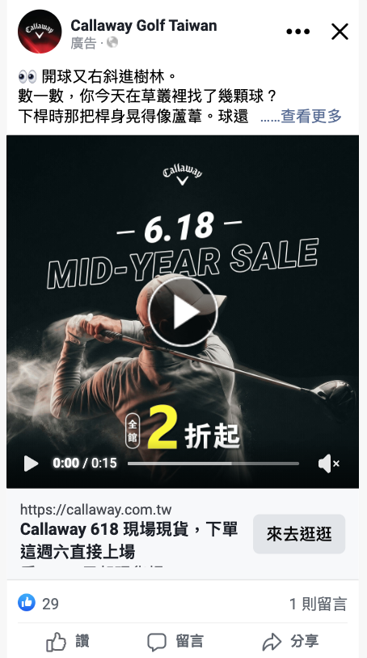

優先放大Descente
DSG_目錄用套框_618
ROAS12.5
CPA$294
Spend$23,224
內部月會報告｜資料期間：2026/6/1–6/17｜執行期間：2026/6/18–6/30｜台北時區
查看管理摘要 ↓業績現況與挑戰：前 17 天日均營收 $457k；後 13 天衝刺期日均目標 $564k，增幅需達 23.5%。
品牌成效分流策略：
| 品牌 | 淨營收 | KPI 達成 | 預算使用 | 目前 Blended ROI | 剩餘需 ROI |
|---|---|---|---|---|---|
| Descente | $3,058,244 | 52.7% | 68.3% | 5.0 | 9.7 |
| ASH GOLF | $949,156 | 27.1% | 42.6% | 5.0 | 9.9 |
| G/FORE | $1,476,030 | 56.8% | 67.1% | 11.0 | 17.1 |
| Callaway | $1,417,934 | 83.4% | 81.1% | 17.2 | 14.7 |
| 2XU TW | $863,638 | 57.6% | 66.0% | 6.5 | 9.4 |
相較 6/4–6/10，6/11–6/17 的 Descente 日均淨營收增加 34.8%，但 blended ROI 從 5.7 降至 4.9；Callaway 日均營收增加 20.8%，ROI 從 15.8 降至 12.6。ASH 的日均營收與 ROI 同步改善，表示暖受眾搶救有空間，但仍未達目標。
| 品牌 | 前期日均淨營收 | 近期日均淨營收 | 變化 | 前期 ROI | 近期 ROI |
|---|---|---|---|---|---|
| Descente | $160,149 | $215,927 | 34.8% | 5.7 | 4.9 |
| ASH GOLF | $46,842 | $56,173 | 19.9% | 4.2 | 5.9 |
| G/FORE | $82,575 | $67,583 | -18.2% | 9.5 | 9.6 |
| Callaway | $67,059 | $81,034 | 20.8% | 15.8 | 12.6 |
| 2XU TW | $46,313 | $58,646 | 26.6% | 6.6 | 6.8 |
Descente 的 Google ROAS 6.3 高於 Meta 4.6；合併品牌關鍵字 ROAS 約 14.2。G/FORE Meta ROAS 15.9，明顯高於 Google 6.9。ASH 兩平台平均皆未達目標，但 Meta 暖受眾另有 9.8。
| 品牌 | 平台 | 花費 | 平台 ROAS | CPA | 點擊→購買 |
|---|---|---|---|---|---|
| Descente | Meta | $504,892 | 4.6 | $482 | 1.5% |
| Descente | $104,960 | 6.3 | $1,399 | 0.4% | |
| ASH GOLF | Meta | $148,304 | 4.0 | $690 | 1.4% |
| ASH GOLF | $42,705 | 5.6 | $1,525 | 0.8% | |
| G/FORE | Meta | $76,265 | 15.9 | $230 | 2.5% |
| G/FORE | $57,987 | 6.9 | $1,706 | 1.3% | |
| Callaway | Meta | $82,546 | 11.0 | $411 | 1.6% |
| 2XU TW | Meta | $103,172 | 7.0 | $625 | 1.1% |
| 2XU TW | $28,801 | 0.0 | — | 0.0% |
Descente 暖受眾 ROAS 7.8、類似受眾僅 1.6；ASH 暖受眾 9.8，廣泛拓新客 2.5；2XU 暖受眾 7.8。這符合熟悉效應與風險降低：接觸過商品的人更容易被期限提示推向完成購買。G/FORE 廣泛拓新 ROAS 22.1，顯示明確商品／折扣訊息仍能有效開發新客。Callaway 暖受眾與類似受眾成效相近，ROAS 約 13，但活動最後仍以暖受眾為主降低風險。
| 品牌 | 推定受眾角色 | 花費 | ROAS | CPA | 點擊→購買 |
|---|---|---|---|---|---|
| Descente | 暖受眾／再行銷 | $126,336 | 7.8 | $284 | 2.0% |
| Descente | 興趣／廣泛拓新 | $327,719 | 3.9 | $602 | 1.3% |
| Descente | 類似受眾 | $50,837 | 1.6 | $862 | 0.9% |
| ASH GOLF | 暖受眾／再行銷 | $33,528 | 9.8 | $326 | 2.6% |
| ASH GOLF | 興趣／廣泛拓新 | $80,548 | 2.5 | $982 | 1.1% |
| ASH GOLF | 類似受眾 | $34,228 | 2.0 | $1,141 | 0.7% |
| G/FORE | 興趣／廣泛拓新 | $35,415 | 22.1 | $167 | 3.5% |
| G/FORE | 暖受眾／再行銷 | $40,850 | 10.6 | $340 | 1.7% |
| Callaway | 暖受眾／再行銷 | $25,234 | 13.3 | $355 | 1.6% |
| Callaway | 類似受眾 | $14,742 | 13.1 | $335 | 2.0% |
| Callaway | 興趣／廣泛拓新 | $42,570 | 8.9 | $495 | 1.4% |
| 2XU TW | 暖受眾／再行銷 | $25,029 | 7.8 | $569 | 1.4% |
| 2XU TW | 興趣／廣泛拓新 | $78,143 | 6.7 | $646 | 1.0% |
勝出素材多為目錄、正檔入口、明確商品系列。這說明注意力不等於購買意圖：收尾素材需同時降低選擇成本並提供明確下一步。



整體新客貢獻約 60.7% 淨營收。Callaway 新客占 77.9%，仍可保留高意圖拓新；ASH 回購客貢獻 56.4% 淨營收，且回購 AOV 約 $7.8k，高於新客 $4.8k，因此短期應優先喚回會員與既有互動者。
| 品牌 | 新客營收占比 | 新客 AOV | 回購營收占比 | 回購 AOV |
|---|---|---|---|---|
| Descente | 57.4% | $4,782 | 42.6% | $5,363 |
| ASH GOLF | 43.6% | $4,752 | 56.4% | $7,764 |
| G/FORE | 58.8% | $7,486 | 41.2% | $7,322 |
| Callaway | 77.9% | $11,750 | 22.1% | $10,111 |
| 2XU TW | 66.0% | $3,877 | 34.0% | $4,738 |
| 品牌 | 剩餘預算 | Meta 上限 | Google 上限 | 主要用途 |
|---|---|---|---|---|
| Descente | $282,456 | $112,982 | $169,474 | Google 品牌關鍵字＋PMax_1；Meta 暖受眾 |
| ASH GOLF | $257,709 | $180,396 | $77,313 | Meta 暖受眾優先；Google 分批釋放 |
| G/FORE | $65,748 | $59,173 | $6,575 | Meta 廣泛拓新＋高效素材 |
| Callaway | $19,250 | $19,250 | $0 | 全數 Meta，暖受眾／類似受眾 |
| 2XU TW | $68,027 | $61,224 | $6,803 | Meta 暖受眾；Google 品牌需求承接 |
| 預算比例 | 目的 | 執行重點 |
|---|---|---|
| 30%（約 $208k） | 承接 618 高意圖 | 加購／瀏覽 1–7 日、品牌搜尋、勝出素材 |
| 45%（約 $312k） | 依成效擴量 | 每 48 小時只對達標單元追加 |
| 25%（約 $173k） | 倒數收尾 | 近期暖受眾、期限、商品利益、社會證明 |
本次活動以貼文觸及為目標，於 6/15–6/17 進行地區鎖定投放。實際投遞集中在台中、彰化與苗栗，三區合計占每日觸及累計的 86.6%；其中台中單區占 52.4%，為主要曝光來源。
平均 CPM 約 $15.35，曝光與每日觸及累計相當接近，顯示三天投放以擴大覆蓋為主，而非在單日內反覆觸及同一批受眾。由於資料為每日地區／人口拆解，152,125 是每日觸及加總，不代表跨三日去重後的唯一人數。
| 地區 | 花費 | 曝光 | 每日觸及累計 | 觸及占比 |
|---|---|---|---|---|
| 台中 | $1,262 | 82,268 | 79,760 | 52.4% |
| 彰化 | $570 | 36,839 | 36,226 | 23.8% |
| 苗栗 | $246 | 15,836 | 15,764 | 10.4% |
| 新竹市 | $139 | 9,933 | 9,799 | 6.4% |
| 南投 | $157 | 9,821 | 9,654 | 6.3% |
| 新竹縣 | $15 | 934 | 922 | 0.6% |
55–64 歲為最大年齡層，占 26.3%；其次是 45–54 歲，占 21.6%。男性占每日觸及累計 78.8%，女性占 20.8%，受眾輪廓與高爾夫興趣投放方向一致。
| 年齡 | 每日觸及累計 | 占比 |
|---|---|---|
| 55–64 | 40,034 | 26.3% |
| 45–54 | 32,837 | 21.6% |
| 65+ | 28,482 | 18.7% |
| 35–44 | 26,250 | 17.2% |
| 25–34 | 24,690 | 16.2% |